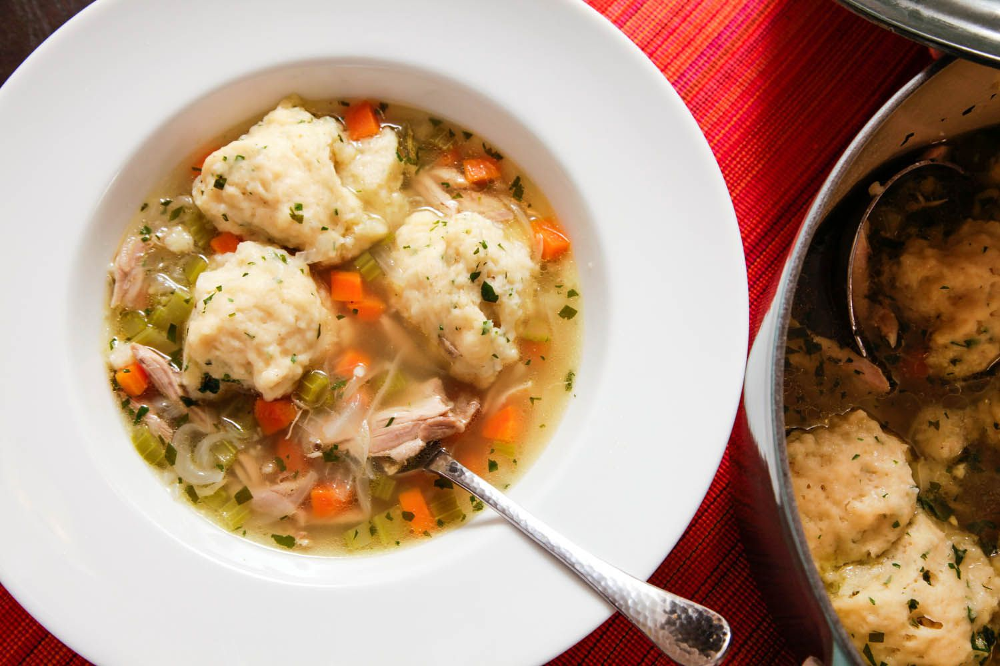

Chicken and Dumplings

This is a great recipe to make with any chicken stock that might be lying around
Ingredients For Soup
- 2 Quarts Chicken Stock
- Picked meat from 3 chicken thighs or 4 legs
- 2 medium carrots peeled and cut into medium dice
- 1 medium stalk celery cur into medium dice
- 1 small onion, finely sliced
Ingredients for Dumplings
- 3/4 cup buttermilk
- 1 large egg
- 10 ounces (about 2 cups) unbleached all-purpose flour
- 1 teaspoon baking powder
- 1 1/2 teaspoon kosher salt
- 4 tablespoons cold unsalted butter, cut into 1/4 inch pats
- 1/4 cup chopped fresh parsley
- freshly ground black pepper
Steps
- Combine the chicken stock (not the meat), carrots, celery, and onion in a large dutch oven and bring to a boil over high heat.
- Reduce to a simmer and cook until the vegetables are tender, about 20 minutes.
- Meanwhile, make the biscuits: Whisk together the buttermilk and egg into a medium bowl.
- In the bowl of a food processor, combine the flour, baking poweder, baking soda, and salt and process until mixed, about 2 seconds.
- Scatter the butter evenly over the surface of the flour and pulse until the mixture resembles coarse meal and the largest butter pieces are about 1/4 inch at their widest dimension.
- Transfer to a large bowl, add the buttermilk mixture, and fold with a rubber spatula until just combined. The dough will be a little shaggy and pretty sticky.
- Stir the parsley and chicken meat into the stock. Season to taste with salt and peper and bring to a simmer.
- Using a greased tablespoon measure, drop dumplings onto its surface, leaving a little space between them.
- Cover the pot, reduce the heat to low, and cook until the dumpligs have doubled in volume and are cooked through. (You can cut one open to check, or they are done if a toothpick comes out clean)
- Serve immediately.